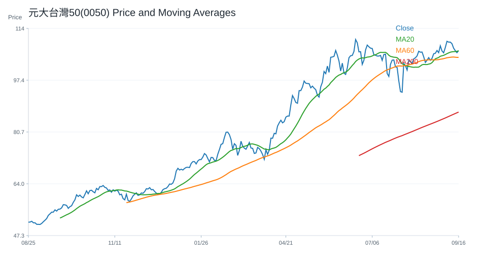
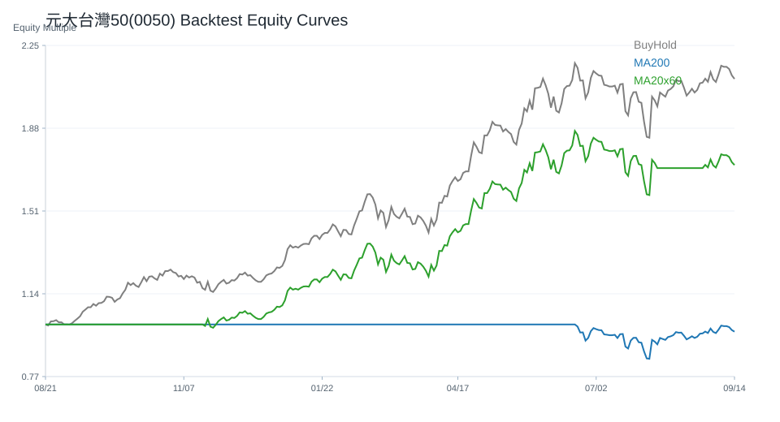
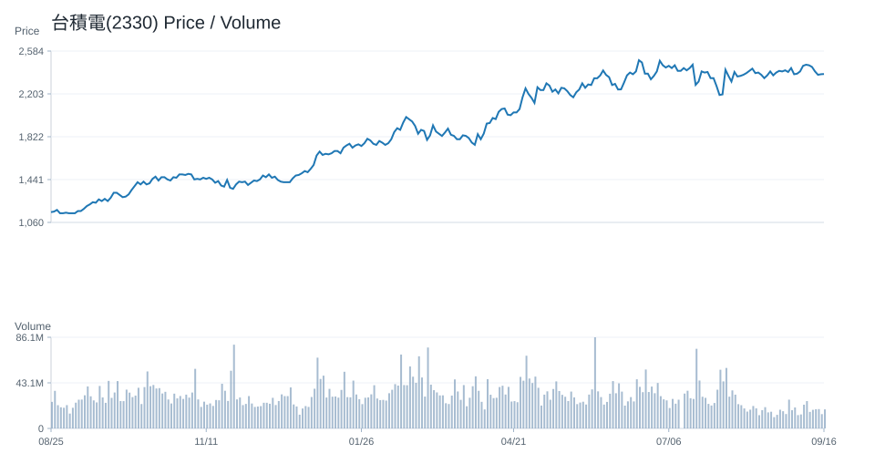

每日市場研究報告
日期：2026-07-23
本報告僅供研究用途，不構成任何投資建議。
一、市場概況
今日全球市場重點：
- 台股：已取得資料
- 美股：已取得資料
市場摘要：已收集 88 個市場資料檔案。
- 台股：已統計 23 個標的；20 日相對強勢：緯穎(6669)(20.35%)、南電(8046)(17.70%)、緯創(3231)(8.44%)、技嘉(2376)(6.14%)、華碩(2357)(2.81%)
- 美股：已統計 20 個標的；20 日相對強勢：META(11.56%)、AAPL(10.73%)、AMD(6.25%)、CRM(6.24%)、NVDA(6.01%)
二、台股分析
大盤
台股觀察清單，以下列出前 12 個標的：
- 元大台灣50(0050)：收盤 103.90；20 日 -3.08%；60 日 12.93%；200 日均線之上：是
- 富邦科技(0052)：收盤 60.90；20 日 -3.33%；60 日 13.20%；200 日均線之上：否
- 元大高股息(0056)：收盤 50.65；20 日 -4.79%；60 日 23.21%；200 日均線之上：是
- 主動統一台股增長(00981A)：收盤 28.69；20 日 -8.92%；60 日 3.16%；200 日均線之上：是
- 聯電(2303)：收盤 138.50；20 日 -22.41%；60 日 84.42%；200 日均線之上：是
- 台達電(2308)：收盤 1880.00；20 日 -5.05%；60 日 -11.53%；200 日均線之上：是
- 鴻海(2317)：收盤 257.50；20 日 0.00%；60 日 14.19%；200 日均線之上：是
- 台積電(2330)：收盤 2405.00；20 日 0.63%；60 日 8.58%；200 日均線之上：是
- 華碩(2357)：收盤 769.00；20 日 2.81%；60 日 30.78%；200 日均線之上：是
- 技嘉(2376)：收盤 354.50；20 日 6.14%；60 日 25.93%；200 日均線之上：是
- 廣達(2382)：收盤 336.00；20 日 -8.32%；60 日 4.67%；200 日均線之上：是
- 中華電(2412)：收盤 138.00；20 日 -4.17%；60 日 0.73%；200 日均線之上：是
- 其餘 11 個標的已納入統計與強弱排行。
成交量
量價分析標的數：23
- 量價偏多觀察：緯創(3231)(價漲量增, 分數 4, 5 日 18.43%, 量比 5.03x)、緯穎(6669)(價漲量增, 分數 4, 5 日 6.94%, 量比 1.55x)、技嘉(2376)(價漲量增, 分數 3, 5 日 5.19%, 量比 1.31x)、鴻海(2317)(價漲量增, 分數 2, 5 日 6.19%, 量比 1.31x)、奇鋐(3017)(價漲量增, 分數 2, 5 日 9.66%, 量比 1.85x)
- 量價偏弱觀察：主動統一台股增長(00981A)(量縮整理, 分數 -2, 5 日 -0.90%, 量比 0.72x)、聯電(2303)(量能中性, 分數 -2, 5 日 -13.44%, 量比 0.76x)、聯發科(2454)(量能中性, 分數 -2, 5 日 4.73%, 量比 0.98x)、國泰金(2882)(量縮整理, 分數 -2, 5 日 0.00%, 量比 0.45x)、中信金(2891)(量縮整理, 分數 -2, 5 日 0.79%, 量比 0.64x)
類股輪動
MVP 尚未接入完整類股分類資料，暫不推論類股輪動。
強勢股
緯穎(6669)(20.35%)、南電(8046)(17.70%)、緯創(3231)(8.44%)、技嘉(2376)(6.14%)、華碩(2357)(2.81%)
弱勢股
聯電(2303)(-22.41%)、世芯-KY(3661)(-17.02%)、國泰金(2882)(-12.74%)、欣興(3037)(-12.16%)、聯發科(2454)(-10.09%)
三、美股分析
主要 ETF
- QQQ：收盤 705.35；20 日 -1.16%；60 日 6.25%；200 日均線之上：是
- VOO：收盤 687.03；20 日 1.58%；60 日 4.66%；200 日均線之上：是
- VT：收盤 156.02；20 日 1.10%；60 日 3.78%；200 日均線之上：是
- SOXX：收盤 555.52；20 日 -7.93%；60 日 20.35%；200 日均線之上：是
科技股
- NVDA：收盤 212.06；20 日 6.01%；60 日 1.82%；200 日均線之上：是
- AAPL：收盤 325.89；20 日 10.73%；60 日 20.23%；200 日均線之上：是
- MSFT：收盤 390.34；20 日 4.39%；60 日 -8.07%；200 日均線之上：否
- TSM：收盤 421.21；20 日 -3.48%；60 日 4.66%；200 日均線之上：是
半導體
- SOXX：收盤 555.52；20 日 -7.93%；60 日 20.35%；200 日均線之上：是
- NVDA：收盤 212.06；20 日 6.01%；60 日 1.82%；200 日均線之上：是
- TSM：收盤 421.21；20 日 -3.48%；60 日 4.66%；200 日均線之上：是
AI 概念股
目前以 NVDA、MSFT、TSM 作為 AI 相關觀察清單，不擴大推論到未納入資料的標的。
四、技術分析
技術分析狀態：已取得資料
AI 不重新計算 RSI、MACD、EMA、KD、ATR、ADX，只解讀 Python 輸出的結果。
Python 已提供價格趨勢統計，包括 1 日、5 日、20 日、60 日、252 日漲跌幅，以及 20/60/200 日均線位置與 52 週高低點距離。
Python 也已計算 RSI(14)、MACD(12/26/9)、EMA(20/50/200)、KD(9)、Bollinger Bands(20, 2)、ATR(14)、ADX(14)。
- 元大台灣50(0050)：RSI14 49.06；MACD hist -0.61；K/D 47.20/38.97；ADX 12.95；布林上/中/下 110.61/105.33/100.05
- 台積電(2330)：RSI14 51.08；MACD hist -9.96；K/D 50.49/43.53；ADX 12.20；布林上/中/下 2519.78/2416.25/2312.72
- QQQ：RSI14 46.65；MACD hist -2.15；K/D 41.82/39.72；ADX 18.72；布林上/中/下 734.32/714.25/694.19
- VOO：RSI14 51.58；MACD hist -0.56；K/D 46.84/54.79；ADX 13.13；布林上/中/下 697.62/685.56/673.50
- SOXX：RSI14 48.18；MACD hist -5.26；K/D 44.94/34.08；ADX 20.49；布林上/中/下 636.00/572.88/509.75
- NVDA：RSI14 56.18；MACD hist 1.10；K/D 69.20/67.92；ADX 13.39；布林上/中/下 214.80/202.29/189.78
量價分析
Python 已依成交量與價格變化產生量價型態，AI 只解讀輸出結果。
- 元大台灣50(0050)：量能中性；5 日 -2.35%；20 日 -3.08%；量比 20 日均量 0.44 倍；OBV 20 日量壓 -38.36%；說明：量價未出現明確偏多或偏空結構、近 5 日均量高於 20 日均量
- 台積電(2330)：量能中性；5 日 -2.63%；20 日 0.63%；量比 20 日均量 0.81 倍；OBV 20 日量壓 8.11%；說明：量價未出現明確偏多或偏空結構、近 5 日均量高於 20 日均量
- QQQ：量縮整理；5 日 -1.73%；20 日 -1.16%；量比 20 日均量 0.60 倍；OBV 20 日量壓 -8.31%；說明：價格震盪不大且成交量偏低
- VOO：量縮整理；5 日 -0.98%；20 日 1.58%；量比 20 日均量 0.49 倍；OBV 20 日量壓 3.73%；說明：價格震盪不大且成交量偏低、近 5 日均量低於 20 日均量
- SOXX：量縮整理；5 日 0.05%；20 日 -7.93%；量比 20 日均量 0.62 倍；OBV 20 日量壓 -9.67%；說明：價格震盪不大且成交量偏低
- NVDA：量能中性；5 日 -0.21%；20 日 6.01%；量比 20 日均量 1.01 倍；OBV 20 日量壓 5.10%；說明：量價未出現明確偏多或偏空結構
五、新聞分析
新聞分析狀態：已取得資料
最近 30 天 RSS 收集結果：財經新聞 80 則，科技新聞 30 則，台灣財經新聞 196 則。
新聞摘要：最近新聞共 306 則；主要分類分布為 ai_semiconductor:237、earnings_business:46、other:43；高頻關鍵字包含 AI、台積電、半導體、台股、財報、法說會、Tesla、Apple。
分類統計：AI / 半導體:237、總經 / 利率:29、財報 / 企業:46、市場風險:19、其他:43
高頻關鍵字：AI(195)、台積電(89)、半導體(20)、台股(20)、財報(17)、法說會(12)、Tesla(9)、Apple(7)、Trump(6)、股市(6)
代表新聞：
- [CNBC Finance] Houthis claim strikes on Saudi Arabian oil tankers in Red Sea as Iran conflict expands (Thu, 23 Jul 2026 07:38:43 GMT)
- [CNBC Finance] UniCredit CEO tells CNBC full acquisition of Commerzbank could happen in fourth quarter (Thu, 23 Jul 2026 07:11:56 GMT)
- [Google News 台股半導體] 意法半導體第3季展望略遜市場預期看好AI帶動第4季加速成長| 全球財經| 全球 - UDN (Thu, 23 Jul 2026 06:35:24 GMT)
- [CNBC Finance] Oil prices climb after tanker struck off Saudi Arabia, Trump escalates Iran threats (Thu, 23 Jul 2026 06:23:06 GMT)
- [Google News 台股] 不敗教主點名「這檔小台積電」報酬率狂勝260% - Yahoo股市 (Thu, 23 Jul 2026 06:16:11 GMT)
- [Google News 台股] 台股尾盤逆轉秀漲25點！台積電止跌漲5元、鴻海勁揚逾2% 日月光難挽頹勢挫跌1.07% - Yahoo股市 (Thu, 23 Jul 2026 06:14:54 GMT)
- [TechCrunch] ServiceNow bets $40 million on Indian banking software specialist to expand its financial services push (Thu, 23 Jul 2026 06:09:13 +0000)
- [Google News 台股] 台積電尾盤爆5千多張單！收2405元漲5元 分析師：還在整理中 - Yahoo股市 (Thu, 23 Jul 2026 05:56:17 GMT)
分析：
- 市場影響：可依新聞分類與高頻關鍵字判斷市場關注焦點。
- 利多：若 AI / 半導體、企業財報與展望新聞占比提高，偏向成長題材支撐。
- 利空：若總經利率、波動、地緣政治與衰退新聞占比提高，需提高風險意識。
事件影響
依新聞標題與摘要的標的別名、產業主題與事件關鍵字進行規則式匹配。
台股
- 事件支撐觀察：台積電(2330)(事件偏多, 分數 5, 新聞 88 則)
- 事件風險觀察：資料不足
- 台積電(2330)：事件偏多，分數 5，匹配新聞 88 則，主題 AI / 半導體:87、財報 / 企業:18；代表新聞：快訊／台積電拉尾盤收漲5元 台股逆轉跌勢收漲25點 - ETtoday財經雲
美股
- 事件支撐觀察：SOXX(事件偏多, 分數 5, 新聞 127 則)、TSLA(事件偏多, 分數 2, 新聞 6 則)
- 事件風險觀察：QQQ(事件偏空, 分數 -3, 新聞 78 則)、VOO(事件偏空, 分數 -3, 新聞 78 則)、VT(事件偏空, 分數 -3, 新聞 77 則)
- SOXX：事件偏多，分數 5，匹配新聞 127 則，主題 AI / 半導體:127、財報 / 企業:21；代表新聞：意法半導體第3季展望略遜市場預期看好AI帶動第4季加速成長| 全球財經| 全球 - UDN
- QQQ：事件偏空，分數 -3，匹配新聞 78 則，主題 AI / 半導體:57、財報 / 企業:37、總經 / 利率:3、市場風險:3；代表新聞：台股尾盤逆轉秀漲25點！台積電止跌漲5元、鴻海勁揚逾2% 日月光難挽頹勢挫跌1.07% - Yahoo股市
- VOO：事件偏空，分數 -3，匹配新聞 78 則，主題 AI / 半導體:57、財報 / 企業:37、總經 / 利率:3、市場風險:3；代表新聞：台股尾盤逆轉秀漲25點！台積電止跌漲5元、鴻海勁揚逾2% 日月光難挽頹勢挫跌1.07% - Yahoo股市
- VT：事件偏空，分數 -3，匹配新聞 77 則，主題 AI / 半導體:57、財報 / 企業:37、總經 / 利率:3、市場風險:3；代表新聞：台股尾盤逆轉秀漲25點！台積電止跌漲5元、鴻海勁揚逾2% 日月光難挽頹勢挫跌1.07% - Yahoo股市
- TSLA：事件偏多，分數 2，匹配新聞 6 則，主題 財報 / 企業:5、AI / 半導體:1；代表新聞：Alphabet and Tesla test Wall Street's patience as AI spending overshadows growth
六、總經分析
總經分析狀態：已取得資料
包含：
- CPI
- 利率
- PMI
- GDP
- VIX
- 美元指數
- 公債殖利率
總經摘要：Fed Funds Rate 3.63，近 3 期趨勢 持平；美國 10 年期公債殖利率 4.657，近 3 期趨勢 連續上升；VIX 17.57，近 3 期趨勢 最近一期上升。整體總經風險分級：medium。
- CPI：332.57（2026-06-01）；前期變化 -1.41 / -0.42%；近 3 期趨勢 最近一期下降；風險 偏低
- Fed Funds Rate：3.63（2026-06-01）；前期變化 0.00 / 0.00%；近 3 期趨勢 持平；風險 偏低
- GDP：31865.72（2026-01-01）；前期變化 +443.19 / 1.41%；近 3 期趨勢 連續上升；風險 中等
- 美元指數：120.53（2026-07-17）；前期變化 +0.20 / 0.17%；近 3 期趨勢 連續上升；風險 中等
- PMI：PMI 尚未接入可靠公開資料來源。
- VIX：17.57（2026-07-23）；前期變化 +0.93 / 5.59%；近 3 期趨勢 最近一期上升；風險 偏低
- 美國 10 年期公債殖利率：4.66（2026-07-22）；前期變化 +0.03 / 0.63%；近 3 期趨勢 連續上升；風險 中等
整體總經風險分級：中等
七、風險分析
目前主要風險：
- 市場風險：依 VIX、均線與短中期漲跌幅觀察
- 總經風險：依利率、美元指數與公債殖利率觀察
- 政策風險：資料來源尚未接入政策事件資料
- 地緣政治：資料來源尚未接入地緣政治事件資料
風險摘要：總經風險分級：中等。
總經風險總評：中等
- Fed Funds Rate：偏低；趨勢 持平；最新值 3.63
- 美元指數：中等；趨勢 連續上升；最新值 120.53
- VIX：偏低；趨勢 最近一期上升；最新值 17.57
- 美國 10 年期公債殖利率：中等；趨勢 連續上升；最新值 4.66
八、未來觀察重點
接下來應持續關注：
- 財報
- 經濟數據
- Fed
- 國際事件
九、圖表摘要
以下圖表由 Python 自動產生，包含價格均線、量價關係與回測權益曲線。
元大台灣50(0050)



台積電(2330)



QQQ


VOO


SOXX


NVDA


十、個股研究訊號與觀察等級
研究訊號僅供分析，不是買賣建議。
台股
觀察等級較高：
- 緯穎(6669)：積極觀察；研究訊號 強烈偏多，分數 10。多項量化與事件條件同時偏正向，適合列為優先研究名單。依據：20 日漲幅偏強、60 日趨勢偏強、站上 20 日均線、站上 200 日均線。
- 緯創(3231)：積極觀察；研究訊號 強烈偏多，分數 9。多項量化與事件條件同時偏正向，適合列為優先研究名單。依據：20 日漲幅偏強、60 日趨勢偏強、站上 20 日均線、站上 200 日均線。
- 鴻海(2317)：積極觀察；研究訊號 強烈偏多，分數 8。多項量化與事件條件同時偏正向，適合列為優先研究名單。依據：60 日趨勢偏強、站上 20 日均線、站上 200 日均線、RSI 位於中性偏強區。
- 技嘉(2376)：積極觀察；研究訊號 強烈偏多，分數 8。多項量化與事件條件同時偏正向，適合列為優先研究名單。依據：20 日漲幅偏強、60 日趨勢偏強、站上 20 日均線、站上 200 日均線。
- 奇鋐(3017)：積極觀察；研究訊號 強烈偏多，分數 6。多項量化與事件條件同時偏正向，適合列為優先研究名單。依據：60 日趨勢偏弱、站上 20 日均線、站上 200 日均線、RSI 位於中性偏強區。
降低關注 / 風險觀察：
- 世芯-KY(3661)：高風險觀察；研究訊號 強烈偏空，分數 -7。多項條件偏弱或風險較高，研究上需提高風險意識。依據：20 日跌幅偏弱、60 日趨勢偏弱、跌破 20 日均線、跌破 200 日均線。
- 聯電(2303)：降低關注；研究訊號 偏空，分數 -4。部分條件偏弱，研究關注度應低於正向標的。依據：20 日跌幅偏弱、60 日趨勢偏強、跌破 20 日均線、站上 200 日均線。
- 富邦科技(0052)：降低關注；研究訊號 偏空，分數 -3。部分條件偏弱，研究關注度應低於正向標的。依據：60 日趨勢偏強、跌破 20 日均線、跌破 200 日均線、RSI 位於中性偏強區。
- 廣達(2382)：維持觀察；研究訊號 中性，分數 -2。正負條件尚未形成明確方向，維持一般追蹤。依據：20 日跌幅偏弱、跌破 20 日均線、站上 200 日均線、MACD histogram 為負。
- 欣興(3037)：維持觀察；研究訊號 中性，分數 -2。正負條件尚未形成明確方向，維持一般追蹤。依據：20 日跌幅偏弱、跌破 20 日均線、站上 200 日均線、RSI 位於中性偏強區。
美股
觀察等級較高：
- AAPL：積極觀察；研究訊號 強烈偏多，分數 7。多項量化與事件條件同時偏正向，適合列為優先研究名單。依據：20 日漲幅偏強、60 日趨勢偏強、站上 20 日均線、站上 200 日均線。
- NVDA：積極觀察；研究訊號 強烈偏多，分數 7。多項量化與事件條件同時偏正向，適合列為優先研究名單。依據：20 日漲幅偏強、站上 20 日均線、站上 200 日均線、RSI 位於中性偏強區。
- AVGO：積極觀察；研究訊號 強烈偏多，分數 6。多項量化與事件條件同時偏正向，適合列為優先研究名單。依據：站上 20 日均線、站上 200 日均線、RSI 位於中性偏強區、MACD histogram 為正。
- AMD：正向觀察；研究訊號 偏多，分數 5。部分條件偏正向，可持續追蹤後續資料是否延續。依據：20 日漲幅偏強、60 日趨勢偏強、站上 20 日均線、站上 200 日均線。
- AMZN：正向觀察；研究訊號 偏多，分數 4。部分條件偏正向，可持續追蹤後續資料是否延續。依據：站上 20 日均線、站上 200 日均線、RSI 位於中性偏強區、MACD histogram 為正。
降低關注 / 風險觀察：
- NFLX：高風險觀察；研究訊號 強烈偏空，分數 -7。多項條件偏弱或風險較高，研究上需提高風險意識。依據：20 日跌幅偏弱、60 日趨勢偏弱、跌破 20 日均線、跌破 200 日均線。
- ORCL：高風險觀察；研究訊號 強烈偏空，分數 -7。多項條件偏弱或風險較高，研究上需提高風險意識。依據：20 日跌幅偏弱、60 日趨勢偏弱、跌破 20 日均線、跌破 200 日均線。
- TSLA：降低關注；研究訊號 偏空，分數 -5。部分條件偏弱，研究關注度應低於正向標的。依據：跌破 20 日均線、跌破 200 日均線、MACD histogram 為負、KD 偏弱。
- CRM：降低關注；研究訊號 偏空，分數 -3。部分條件偏弱，研究關注度應低於正向標的。依據：20 日漲幅偏強、跌破 20 日均線、跌破 200 日均線、RSI 位於中性偏強區。
- GOOGL：維持觀察；研究訊號 中性，分數 -2。正負條件尚未形成明確方向，維持一般追蹤。依據：跌破 20 日均線、站上 200 日均線、MACD histogram 為負、KD 偏弱。
十一、結論
目前市場偏向：中性。
原因：綜合評分 1；QQQ 事件新聞偏空；新聞主題偏向 AI、半導體或企業成長；總經風險中等；QQQ 200 日均線策略歷史風險報酬較佳。
不得提供投資建議。
所有分析僅供研究用途。
系統狀態
- 回測狀態：已取得資料
- 研究用途：research_only
- 投資建議：否
回測摘要
回測假設：交易成本 0.10%；策略使用前一交易日訊號承擔下一交易日報酬，避免偷看未來資料。
回測僅為歷史資料研究，不代表未來績效，也不是投資建議。
策略說明：
- price_above_ma200：收盤價高於 200 日均線時持有，否則空手。
- ma20_cross_ma60：20 日均線高於 60 日均線時持有，否則空手。
- buy_and_hold：買入持有基準，用於比較策略是否優於單純持有。
台股回測標的數：23
- 200 日均線策略 Sharpe 前五：元大台灣50(0050)(Sharpe 1.75, CAGR 37.82%, MDD -21.30%, 交易 3 次, 均持有 246.33 日)、奇鋐(3017)(Sharpe 1.62, CAGR 95.74%, MDD -42.26%, 交易 7 次, 均持有 100.43 日)、元大高股息(0056)(Sharpe 1.57, CAGR 22.88%, MDD -17.70%, 交易 9 次, 均持有 75.78 日)、南電(8046)(Sharpe 1.53, CAGR 73.96%, MDD -23.78%, 交易 5 次, 均持有 73.4 日)、台積電(2330)(Sharpe 1.51, CAGR 42.71%, MDD -24.54%, 交易 9 次, 均持有 81.78 日)
- 20/60 均線策略 Sharpe 前五：主動統一台股增長(00981A)(Sharpe 2.42, CAGR 110.72%, MDD -19.71%, 交易 1 次, 均持有 231.0 日)、台達電(2308)(Sharpe 1.68, CAGR 66.87%, MDD -27.80%, 交易 9 次, 均持有 71.78 日)、元大台灣50(0050)(Sharpe 1.66, CAGR 35.49%, MDD -21.30%, 交易 6 次, 均持有 121.17 日)、奇鋐(3017)(Sharpe 1.62, CAGR 90.45%, MDD -30.69%, 交易 8 次, 均持有 83.12 日)、台積電(2330)(Sharpe 1.52, CAGR 43.29%, MDD -24.54%, 交易 6 次, 均持有 121.33 日)
美股回測標的數：20
- 200 日均線策略 Sharpe 前五：MU(Sharpe 1.53, CAGR 82.12%, MDD -56.04%, 交易 11 次, 均持有 56.82 日)、VOO(Sharpe 1.31, CAGR 14.15%, MDD -10.35%, 交易 5 次, 均持有 148.4 日)、NVDA(Sharpe 1.30, CAGR 55.17%, MDD -29.35%, 交易 5 次, 均持有 146.6 日)、TSM(Sharpe 1.26, CAGR 43.31%, MDD -23.30%, 交易 8 次, 均持有 89.0 日)、QQQ(Sharpe 1.21, CAGR 18.76%, MDD -13.56%, 交易 4 次, 均持有 186.0 日)
- 20/60 均線策略 Sharpe 前五：MU(Sharpe 1.46, CAGR 77.76%, MDD -36.17%, 交易 10 次, 均持有 68.9 日)、NVDA(Sharpe 1.46, CAGR 63.42%, MDD -27.12%, 交易 7 次, 均持有 95.29 日)、META(Sharpe 1.22, CAGR 38.42%, MDD -26.17%, 交易 9 次, 均持有 70.89 日)、TSM(Sharpe 1.20, CAGR 39.29%, MDD -22.56%, 交易 8 次, 均持有 88.0 日)、AAPL(Sharpe 1.11, CAGR 18.77%, MDD -15.23%, 交易 8 次, 均持有 69.75 日)